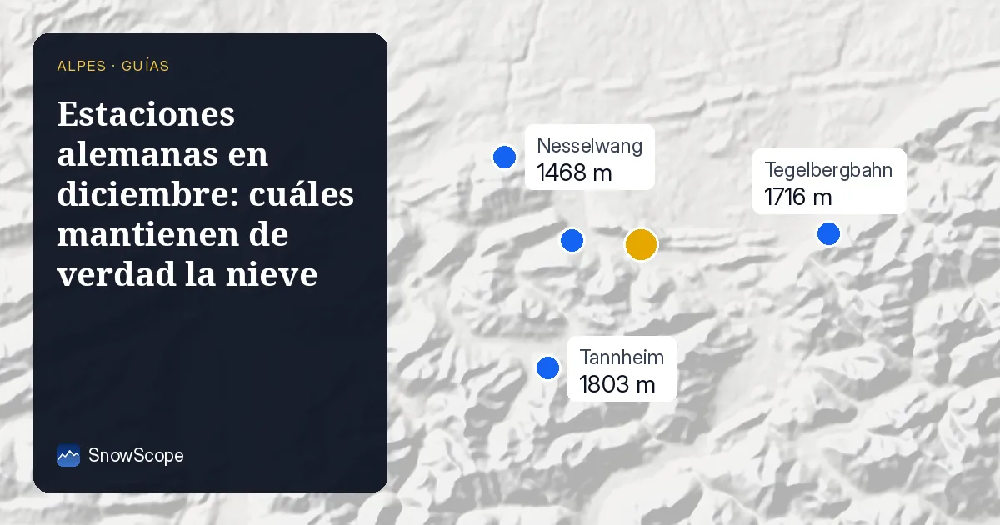

Estaciones alemanas en diciembre: cuáles mantienen de verdad la nieve
En una semana típica de mediados de diciembre, solo dos de las siete estaciones de esquí alemanas que hemos comprobado tienen nieve suficiente para esquiar con seguridad la mayoría de los años: el glaciar de Zugspitze en la cima y la parte alta de Fellhorn sobre Oberstdorf. Las demás son más baratas de visitar pero mucho menos seguras, especialmente en sus bases.
Consulta la previsión de nieve en tiempo real de German ski areas in December en la app SnowScopeEspesor de nieve, alertas de nieve polvo y mapa 3D, gratis.
Dónde la nieve es fiable
El 15 de diciembre, la cima de Zugspitze (2627 m) tiene 30 cm o más en casi todos los inviernos—el 100 % de nuestros 46 inviernos de registros. A media montaña (1811 m) sigue llegando a esa profundidad en el 89 % de los inviernos. Fellhorn/Kanzelwand sobre Oberstdorf cuenta una historia dividida: el 93 % de los inviernos ven 30 cm en la cima (1965 m), pero solo el 59 % a media montaña (1441 m).
Garmisch-Classic se sitúa en el punto medio: 89 % en su cima (2047 m) pero cae al 48 % a media montaña (1387 m). Una vez que pasas a las colinas bávaras más pequeñas, las probabilidades a media montaña caen bruscamente. Sudelfeld alcanza el 39 % a 1186 m, Brauneck solo el 28 % a 1154 m y Oberjoch el 28 % a 1342 m. Feldberg en la Selva Negra apenas llega: 17 % a media montaña (1189 m) y solo 24 % en su cima (1446 m).

Qué pagas por día
Los tres centros de glaciar y alta montaña cuestan prácticamente lo mismo: Zugspitze 70,50 EUR online, Garmisch-Classic 69 EUR y Fellhorn/Kanzelwand 72,90 EUR. Las colinas más pequeñas son más baratas: Sudelfeld, Brauneck y Oberjoch cobran todos 55 EUR por día. Feldberg usa precios dinámicos, así que su coste cambia con la demanda.
Si te quedas seis días, la zona de Oberstdorf (Fellhorn y Kanzelwand) ofrece 344,50 EUR en Adviento (hasta el 20 de diciembre), más barato que los 382,80 EUR de todo el año. Oberjoch vende seis días por 278 EUR. Sudelfeld y Brauneck comparten un forfait de 208 EUR que cubre cuatro días de esquí en seis días naturales. Ni Zugspitze ni Garmisch-Classic venden un paquete de seis días.
La trampa de la nieve fina
Las estaciones más bajas plantean un riesgo de timing. La base de Brauneck (715 m) tiene solo 9 cm de media el 15 de diciembre; la de Sudelfeld (865 m) aguanta 15 cm. Ninguna base ha visto 30 cm en una sola semana de Navidad en todo nuestro registro. Feldberg, a pesar de su altitud, es aún más ajustado: 4 cm en base y solo 8 cm en la cima (1446 m) en un día típico de mediados de diciembre.
No son malas estaciones de esquí. Son malos compromisos para diciembre. Con un forfait de 55 EUR al día y una hora en coche desde Múnich, funcionan solo después de una nevada. Usa el mapa SnowScope y los reportes diarios de cada estación para decidir la mañana de, o el día antes, si hacer el viaje.
Valor a lo largo del mes
Zugspitze gana en relación calidad-precio: precios prácticamente idénticos a las colinas más pequeñas, pero nieve que llega cada año a mediados de diciembre. El descuento de Adviento de Fellhorn/Kanzelwand (344,50 EUR por seis días) lo hace competitivo si tienes una semana para pasar y usas el forfait conectado en Oberstdorf y el Kleinwalsertal.
Para un único día de esquí en invierno, la diferencia entre fiable y arriesgado vale los euros extra. Compra online el forfait de Zugspitze y esquiarás. Espera un pronóstico de tormenta y juega a Sudelfeld u Oberjoch, y podrías desperdiciar gasolina y un día de vacaciones.
La semana de Navidad se ve mejor
Las probabilidades mejoran según avanza diciembre. Para la semana de Navidad (22-28 de diciembre), media montaña en Zugspitze sube al 96 % de probabilidades de 30 cm, y media montaña en Garmisch-Classic sube al 61 %. Incluso Brauneck y Sudelfeld mejoran al 37-39 % a media montaña. Feldberg, sin embargo, se mantiene débil: 24 % en la cima.
Si eres flexible, retrasa tu viaje hasta la semana de Navidad. Si tienes que ir a mediados de diciembre, ve alto: los telesquís superiores de Zugspitze, Fellhorn o Garmisch-Classic aguantan nieve cuando las laderas inferiores no.
Consejos para esquiadores
- Un día a mediados de diciembre: compra online el forfait de Zugspitze; la meseta se sitúa por encima de las nubes y la nieve casi siempre es espesa.
- Una semana en diciembre: coge el forfait de Adviento de Oberstdorf (Fellhorn y Kanzelwand) y esquía las pistas superiores; los valles son más finos pero media montaña y cimas entregan.
- Pre-Alpes bávaros y Selva Negra: visita solo después de una tormenta o en la semana de Navidad; comprueba el mapa de nieve antes de salir de casa.
- Si esquías fuera de pista, lee el boletín de aludes bávaro, especialmente en el terreno expuesto de Zugspitze donde el viento y la nieve fina esconden rocas.
- Evita diciembre completamente en Feldberg a menos que acabe de pasar una tormenta importante; en la mayoría de los años el manto es poco fiable hasta enero.
Sobre estas cifras
Los espesores de nieve de las estaciones son la nieve más profunda en las pistas altas en la fecha indicada; son estimaciones para una zona, no una medida en un punto. Las previsiones pueden cambiar. Consulta siempre el boletín oficial de aludes antes de salir fuera de pista.
Citar este informe
Para investigación, docencia o prensa: cifras y gráficos reutilizables libremente bajo CC BY 4.0 con esta cita.
SnowScope (2026), Estaciones alemanas en diciembre: cuáles mantienen de verdad la nieve, https://snowscope.app/blog/es/2026/11/germany-ski-areas-december-which-hold-snow.html, consultado el 2026-11-14
SnowScope (Atlas Labs). (2026, November 14). Estaciones alemanas en diciembre: cuáles mantienen de verdad la nieve. SnowScope snow reports. https://snowscope.app/blog/es/2026/11/germany-ski-areas-december-which-hold-snow.html
BibTeX
@misc{snowscope2026germanyskiareasdecemberw,
author = {{SnowScope (Atlas Labs)}},
title = {Estaciones alemanas en diciembre: cuáles mantienen de verdad la nieve},
year = {2026},
month = nov,
howpublished = {\url{https://snowscope.app/blog/es/2026/11/germany-ski-areas-december-which-hold-snow.html}},
note = {Published 2026-11-14 14:24 UTC; accessed 2026-11-14}
}· CC BY 4.0 · Métodos, datos y herramientas →
Sigue German ski areas in December
Gratis: un aviso cuando llega la nieve y la previsión cada mañana.